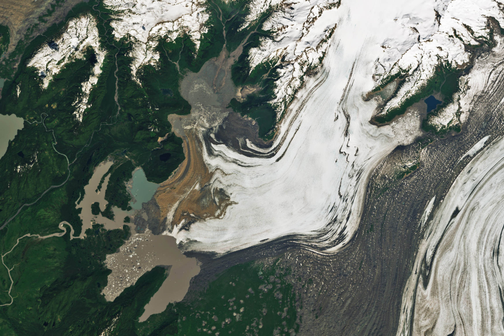

A Glacial Lake’s Evolution
Decades of retreat at the Steller Glacier in Southcentral Alaska have left Berg Lake, one of the region’s glacier-dammed lakes, with new plumbing. Remote sensing instruments have observed the glacier’s thinning and retreat since the 1970s. Satellite imagery now reveals that this retreat has reworked the outflow of Berg Lake, which fills and drains annually.
These images show changes in the Steller Glacier and Berg Lake between July 2003 (left) and June 2024 (right). They were acquired with the TM (Thematic Mapper) on Landsat 5 and the OLI (Operational Land Imager) on Landsat 8, respectively. Located in the Chugach Mountains, the Steller Glacier lies adjacent to the Bering Glacier (visible in the lower right), one of the largest and longest glaciers in North America.
From the 1980s through 2013, Berg Lake drained periodically through a gorge on its southwest side, according to Mauri Pelto, a glaciologist at Nichols College. This pathway is clearly visible in the 2003 image. The 2024 image, however, shows that the northern edge of the glacier’s terminus—which impounds the lake—had retreated substantially and that the outlet had been abandoned.
Vegetation now appears in parts of the former drainage path and fills areas north and east of Starodubtsov Lake. The outflow from Berg Lake now runs southward beneath glacial ice and then toward Lake Ivanov and the southern end of Starodubtsov Lake.
When the image from June 29, 2024 was acquired, Berg Lake was still undergoing its summer fill. The lake was expected to begin releasing water in late July, according to the Alaska-Pacific River Forecast Center of the National Weather Service. Records from recent years indicate that as Berg Lake drains, water levels in Lake Ivanov and nearby waterbodies rise.
Pelto noted that a decline in the lake’s maximum level since the mid-1980s contributed to the abandonment of the southwestern drainage channel. The rapid retreat of the glacier’s terminus—including a loss of about 1 kilometer on the western side between 2016 and 2018—has also played a role in altering the lake’s outflow.
The glacial retreat visible in these images continues a decades-long melting trend. An analysis incorporating data from the Shuttle Radar Topography Mission (SRTM) found that the Steller Glacier thinned overall between 1972 and 1999, losing more than 100 meters (330 feet) of thickness near its terminus.